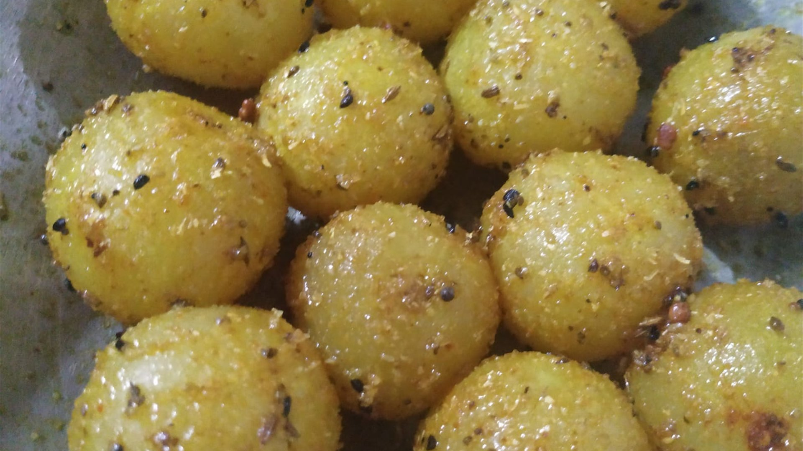
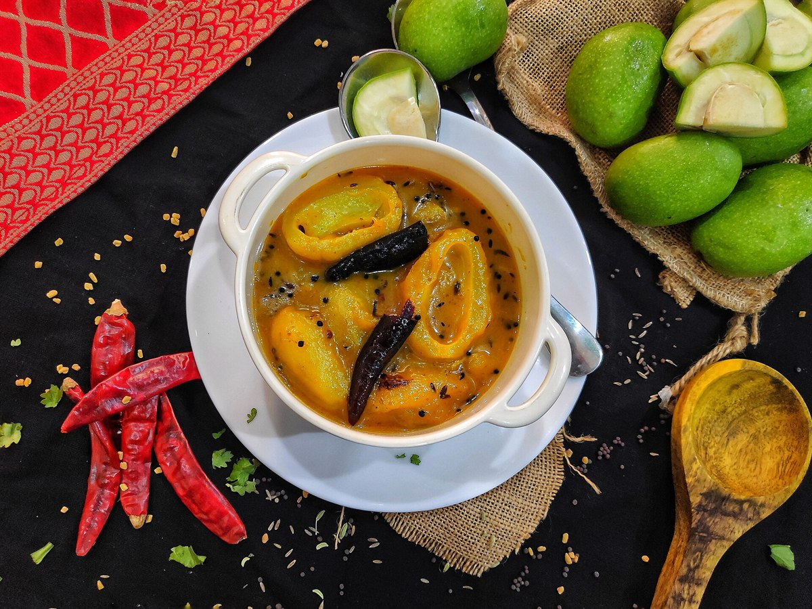
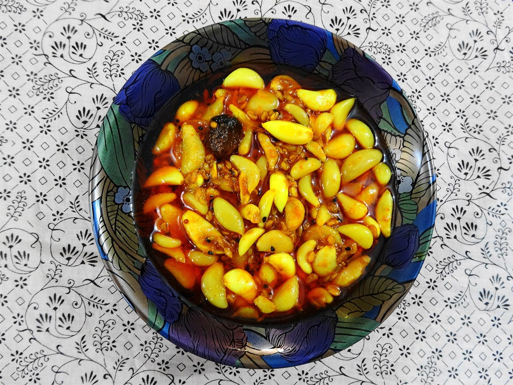
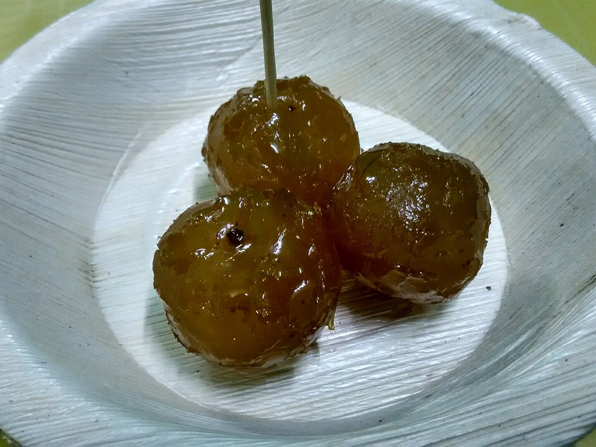
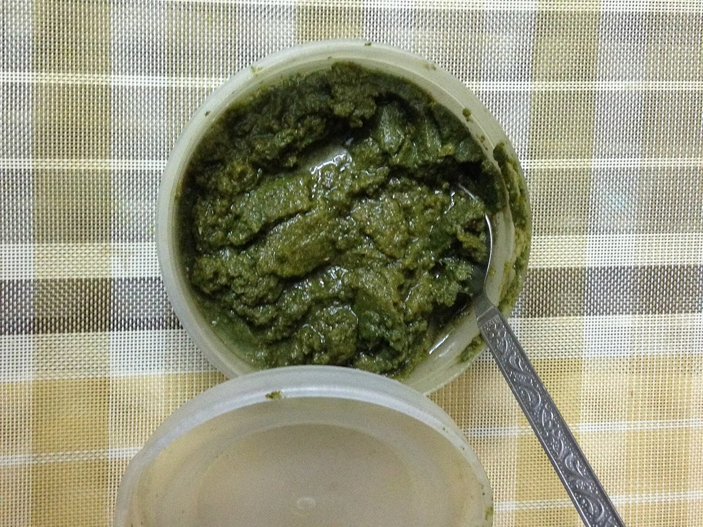

Preserve · 45 min
Khatta-meetha murabba
Cook the syrup to the right stage and the mango will stay bright. The spoon test that tells you when to stop.

The exact method we use for aam ka achar, written out properly instead of the way it gets shouted across a kitchen. With timings, oil ratios and the resting schedule that decides whether a pickle is good.
Two kilos of raw mango, four kilos of salt ratio, and thirty days of patience. This is the same method Meera has used for twenty-two years.

Two kilos of raw mango, one cup of rock salt. Rub the salt in, leave it in the sun for three days until the pieces shrink and go translucent at the edges.
This is the step everyone skips and it is the step that decides everything. Every drop of water left behind thins the masala.
200 g ghar-resham chilli, 50 g fennel, 30 g cumin seed, 20 g mustard seed, 20 g turmeric, 10 g hing. Coarsely ground, not powdered.
A layer of masala, a layer of mango, a thin layer of mustard oil. Repeat to the top so the oil is the final layer and the masala never floats dry.
Hot mustard oil releases the hing and carries the masala into the mango. A heavy weight on top keeps everything under the oil.
Keep the jar in sunlight for a week, then in shade. From day ten, taste with a dry spoon. By day thirty the oil should have turned the colour of the masala.
Preserve · 45 min
Cook the syrup to the right stage and the mango will stay bright. The spoon test that tells you when to stop.

Breakfast · 30 min
Flaky parathas, thick curd and a spoonful of mango pickle. The winter breakfast we grew up on.

Chutney · 15 min
Raw garlic, red chilli and sesame, ground coarse. Serve with hot dosas and a little butter.

Rice & dal · 20 min
A little pickle in the rice and a spoon in the dal. How every household here eats it, every day.

Winter · 10 min
A spoonful in warm milk before bed. The oldest reason amla is kept in an Indian kitchen at all.

Quick · 10 min
Butter, cheese and a thin layer of mint chutney. The fastest way to use a jar you forgot about.
Write these on the inside of your masala box. Everything else can be adjusted to taste.
A spoon on hot paratha with a little ghee. Nothing else is needed.
Mixed with hot dal and rice. Improves plain dal more than any masala.
Butter, cheese and a thin layer of chutney. Particularly good with pudina.
Swirled into thick curd with a pinch of jaggery, as a raita.
Every recipe on this page works with our pickle as a starting point, and the masala pouch is on the shelf if you want to make your own batches.